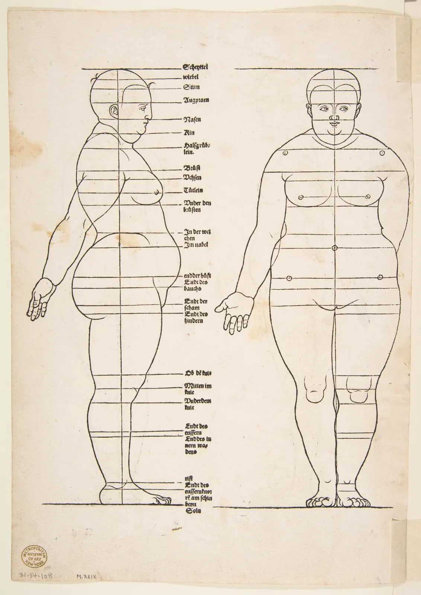

인체의 비례
드로잉 교본을 펴면 거의 언제나 "사람의 키는 머리 여덟 개"라는 그림이 나온다. 그런데 그 그림대로 동네 사람들을 그려 보면 이상하게 모두 패션 잡지의 모델처럼 보인다. 서점 계산대의 주인도, 책을 고르는 초등학생도, 지팡이를 짚은 단골 할아버지도 그렇게 생기지 않았다. 이 장은 그 "여덟 개"가 어디서 왔는지 거슬러 올라가 보고, 실제 사람들의 몸이 얼마나 다양한지 직접 재 본다. 그리고 골목에 사람을 세울 때 키를 정해 주는 단 하나의 선, 수평선을 찾는다.
- 키를 머리 높이로 재는 등신(머리 단위)의 뜻을 알고, 몸의 주요 높이(가슴, 배꼽, 가랑이, 무릎)를 머리 단위로 짚는다.
- 이집트의 격자, 폴리클레이토스, 비트루비우스, 뒤러, 동아시아 도상 규범이 각각 무엇을 위한 약속이었는지 구별한다.
- 8등신이 평균이 아니라 이상화된 관습이라는 것을, 키·머리 높이·다리 길이를 바꿔 가며 확인한다.
- 아이를 어른의 축소판으로 그리면 왜 어색한지, 나이에 따라 머리와 다리의 비례가 어떻게 바뀌는지 본다.
- 눈높이 법칙으로 원근 속 사람의 키를 계산하고, 골목 장면에 여러 사람을 알맞은 크기로 세운다.
머리 몇 개 키인가
사람을 그릴 때 가장 먼저 부딪히는 문제는 "얼마나 크게"가 아니라 "몸의 각 부분을 얼마나 크게"다. 머리를 너무 크게 그리면 아이처럼, 너무 작게 그리면 거인처럼 보인다. 그래서 화가들은 오래전부터 몸 안에 들어 있는 자를 하나 골라 다른 부분을 그것으로 쟀다. 가장 널리 쓰이는 자가 머리다. 정수리에서 턱 끝까지의 높이를 한 단위로 삼아 키가 그 몇 배인지를 말하는 것을 등신(Heads tall, head unit)이라고 한다. "7등신"은 키가 머리 높이의 일곱 배라는 뜻이다.
머리가 자로 쓰이는 데는 이유가 있다. 그림 속에서 머리는 가장 먼저 눈에 띄고, 크기가 사람마다 키만큼 크게 다르지 않으며, 종이 위에서 연필로 재기도 쉽다(2장의 연필 측정). 아래 그림은 같은 키로 맞춘 여섯 사람을 머리 단위로 나란히 세운 것이다.
그림 1에서 눈여겨볼 것은 머리 크기만 바뀐 것이 아니라는 점이다. 머리가 작아질수록 다리가 길어지고, 가랑이의 높이가 키의 절반 쪽으로 올라간다. 비례는 부분 하나의 크기가 아니라 부분들 사이의 관계다. 이제 직접 머리 수를 바꿔 본다. 키는 그대로 두고 머리 높이만 슬라이더로 바꾼다. 왼쪽 눈금은 머리 하나 높이의 띠, 오른쪽 숫자는 각 높이가 위에서 머리 몇 개째인지다.
키는 그대로, 머리 수만 바꾸기
슬라이더를 움직여 보면 등신 숫자가 아주 조금만 바뀌어도 인상이 크게 달라진다는 것을 알 수 있다. 머리 높이가 23 cm인 사람에게 7등신과 8등신의 차이는 키 23 cm, 곧 머리 하나만큼이다. 그래서 "몇 등신"은 그 사람을 재는 숫자이기도 하지만, 그보다 먼저 그림을 어떤 인상으로 만들지 정하는 선택이다. 그 선택이 언제, 왜 생겼는지부터 본다.
규범은 어디서 왔나
몸의 비례를 숫자로 정해 둔 약속을 비례 규범(Canon of proportions)이라고 한다. 규범은 "사람은 이렇게 생겼다"는 관찰 기록이 아니라, 여러 사람이 같은 방식으로 그리고 새기기 위한 작업 규칙이자 그 시대가 생각한 아름다움의 표현이었다. 몇 가지를 시대순으로 보면 그 목적이 서로 다르다.
이집트의 격자. 고대 이집트의 화가와 조각가는 벽이나 돌에 먼저 정사각형 격자를 긋고 그 위에 인물을 앉혔다. 이집트학자 게이 로빈스(Gay Robins)는 『고대 이집트 미술의 비례와 양식』(Proportion and Style in Ancient Egyptian Art, 1994)에서, 중왕국 이후 서 있는 인물은 발바닥에서 이마의 머리카락 선까지를 격자 18칸에 맞춰 그렸다는 것을 수많은 작품의 남은 격자선으로 보여 주었다. 격자는 여러 명의 장인이 큰 벽화를 나눠 그려도 인물이 똑같이 나오게 하는 장치였다. 시대가 바뀌면서 칸 수를 바꾼 격자도 쓰였다. 규범도 변한다는 뜻이다.
폴리클레이토스의 「카논」. 기원전 5세기 그리스의 조각가 폴리클레이토스(Polykleitos)는 「카논」(Kanon, 규범)이라는 글을 쓰고 그 원리를 보여 주는 조각을 만들었다고 전한다. 글은 남아 있지 않다. 2세기 로마의 의사 갈레노스(Galen)가 전한 바로는, 폴리클레이토스는 아름다움이 손가락과 손가락, 손가락과 손바닥, 손바닥과 아래팔처럼 부분과 부분 사이의 비율에 있다고 보았다. 창을 든 청년 조각 「도리포로스」(Doryphoros)가 그 본보기로 여겨지지만, 지금 남은 것은 로마 시대의 대리석 모각들뿐이라 정확한 수치는 학자마다 다르게 복원한다.
비트루비우스. 기원전 1세기 로마의 건축가 비트루비우스(Vitruvius)는 『건축 십서』(De architectura) 제3권에서 신전의 비례를 설명하려고 사람 몸의 비례를 예로 들었다. 턱에서 정수리까지는 키의 8분의 1, 턱에서 이마의 머리카락 선까지의 얼굴은 10분의 1, 손목에서 가운뎃손가락 끝까지의 손도 10분의 1, 발은 6분의 1, 팔꿈치에서 손끝까지는 4분의 1이라고 적었다. 또 사람이 팔다리를 벌리고 누우면 배꼽을 중심으로 그린 원에 손끝과 발끝이 닿고, 키와 양팔을 벌린 길이가 같아 정사각형에도 들어간다고 했다. "8등신"의 가장 오래된 문헌 근거 중 하나가 여기다. 비트루비우스의 관심이 사람이 아니라 건물이었다는 점은 기억해 둘 만하다. 몸이 이렇게 질서 있으니 신전도 그래야 한다는 논리였다.
비트루비우스의 원과 정사각형은 직접 맞춰 볼 수 있다. 아래에서 팔을 들어 올리는 각도와 다리를 벌리는 각도를 바꾸고, 원의 중심(손잡이)을 끌어 손끝과 발끝이 동시에 원에 닿는 자리를 찾는다.
비트루비우스의 원과 정사각형
원과 정사각형이 동시에 맞는 자세는 하나로 정해지지 않는다. 그래서 르네상스의 여러 화가와 건축가가 비트루비우스의 글을 그림으로 옮기려 했을 때 결과가 제각각이었다. 1490년 무렵 레오나르도 다 빈치(Leonardo da Vinci)는 원의 중심(배꼽)과 정사각형의 중심(가랑이)을 서로 다른 점으로 두고 두 자세를 한 사람 위에 겹쳐 그려 이 문제를 풀었다. 지금 베네치아 아카데미아 미술관에 있는 그 소묘가 「비트루비우스 인간」이다. 이 그림은 몸에 대한 측정이라기보다, 사람의 몸에 우주의 질서(원)와 땅의 질서(정사각형)가 함께 들어 있다는 르네상스의 생각을 보여 주는 도식으로 읽힌다.
| 규범 | 시대 | 단위 | 키 | 목적 |
|---|---|---|---|---|
| 이집트의 격자 | 중왕국 이후 | 격자 한 칸 | 머리카락 선까지 18칸 | 여러 장인이 같은 인물을 그리기 |
| 폴리클레이토스 | 기원전 5세기 | 부분과 부분의 비 | 전하지 않음(복원 약 7등신) | 조각의 아름다움, 대칭 |
| 비트루비우스 | 기원전 1세기 | 키의 분수 | 8등신(머리 1/8) | 건축 비례의 근거 |
| 뒤러 | 1528 | 키의 분수, 여러 체형 | 체형마다 다름 | 여러 사람의 몸을 기록하기 |
| 미술 교본(20세기) | 1940년대 이후 | 머리 | 8등신을 이상형으로 | 그림을 빨리 가르치기 |
뒤러의 여러 몸, 동아시아의 도상 규범
규범이 하나의 이상형만 가리킨 것은 아니다. 독일의 화가 알브레히트 뒤러(Albrecht Dürer)는 젊어서 비트루비우스식의 이상적 비례를 찾다가, 말년에는 방향을 바꿨다. 그가 세상을 떠난 해인 1528년에 나온 『인체 비례에 관한 네 권의 책』(Vier Bücher von menschlicher Proportion)은 한 가지 이상형 대신 키가 크고 작은, 굵고 가는 여러 남녀의 몸을 같은 측정 방식으로 기록했다. 아래는 그 책에 실린 목판화 가운데 하나다.

동아시아에도 비례 규범이 있었다. 다만 쓰임새가 달랐다. 불상과 불화를 만드는 장인들은 손가락 너비 같은 몸의 단위로 부처와 보살의 부위별 길이를 정한 도상 규범을 따랐다. 청나라 때인 1742년 티베트어 문헌을 한문으로 옮긴 『조상량도경』(造像量度經)이 그런 지침서다. 여기서 비례는 아름다움의 탐구라기보다 성스러운 형상을 바르게 옮기는 약속이었다. 같은 그림 안에서 부처를 둘레의 인물보다 훨씬 크게 그리는 것도 이 약속의 일부다(7절에서 다시 본다).
반대로 실제 사람을 그리는 초상화에서는 규범보다 그 사람이 먼저였다. 조선의 초상화를 설명할 때 자주 인용되는 말로 "털 한 올이라도 같지 않으면 곧 다른 사람이다(一毫不似 便是他人)"라는 구절이 있다. 조선 후기의 초상화들은 얼굴의 검버섯이나 마맛자국까지 그려 넣을 만큼 그 사람의 생김새를 따랐다. 같은 문화 안에서도 무엇을 그리느냐에 따라 규범을 따르기도, 버리기도 했다는 뜻이다.
실제 사람들의 다양성
실제 어른의 머리 높이(정수리~턱 끝)는 대략 21~24 cm 안팎이다. 사람마다 몇 cm 차이가 나지만, 수십 cm씩 차이가 나는 키에 비하면 훨씬 덜 흩어져 있다. 그래서 키가 큰 사람일수록 등신 숫자도 커지기 쉽다. 이 책의 계산으로 키 152 cm에 머리 22 cm이면 6.9등신, 키 185 cm에 머리 23 cm이면 8.0등신이다. 같은 키라도 다리와 몸통의 길이 비율이 다르다. 앉은키가 키에서 차지하는 몫은 사람마다 다르고, 대략 절반 안팎이다.
아래 시뮬레이터는 같은 키의 두 사람을 겹쳐 놓는다. 왼쪽 층은 키만 같게 맞춘 8등신 규범이고, 오른쪽 층은 슬라이더로 정한 실제 사람이다. 가운데 경계선을 좌우로 끌어 두 층을 비교한다.
규범과 실제 사람 겹쳐 보기
규범과 겹쳐 보면 차이는 대부분 머리와 다리에서 생긴다. 실제 사람을 규범대로 그리면 머리가 작아지고 다리가 길어져, 그 사람이 아니라 "그 사람을 닮은 모델"이 된다. 규범을 아는 것은 쓸모가 있다. 다만 쓸모는 정답을 주는 데 있지 않고, 눈앞의 사람이 규범과 어디서 얼마나 다른지 빨리 알아채게 해 주는 데 있다.
아이와 어른
아이를 그리는데 어른을 작게 줄여 놓으면 키가 아무리 작아도 아이로 보이지 않는다. 아이와 어른은 크기가 아니라 비례가 다르기 때문이다. 사람이 태어나서 어른이 되는 동안 키는 3배 넘게 자라지만(약 50 cm에서 170 cm 안팎), 머리 높이는 2배가 채 되지 않는다. 그 결과 갓난아기는 대략 4등신, 초등학교 저학년쯤은 6등신 안팎, 어른은 7~7.5등신 안팎이 된다. 이 숫자들은 미술 교본에서 흔히 쓰는 어림값이다. 실제 아이들의 성장은 한 사람 한 사람 다르다.
머리만이 아니다. 아기는 다리가 짧아 몸의 한가운데가 배꼽 근처에 있다. 자라면서 다리가 몸통보다 빨리 길어져 어른이 되면 한가운데가 가랑이 근처로 내려온다. 얼굴 안에서도 비례가 바뀐다. 어른은 눈이 머리 높이의 한가운데쯤에 있지만, 아기는 이마가 크고 턱이 작아 눈이 그보다 아래에 있다. 동물행동학자 콘라트 로렌츠(Konrad Lorenz)는 1943년, 큰 머리와 넓은 이마, 낮은 눈, 둥근 볼 같은 특징이 사람에게 "귀엽다"는 반응을 끌어낸다고 보고 이것을 아기 도식(Kindchenschema, Baby schema)이라고 불렀다. 만화 캐릭터가 큰 머리와 낮은 눈으로 귀여움을 만드는 것도 이 특징을 과장한 것이다.
아래에서 나이를 바꿔 본다. 오른쪽 점선은 키 171 cm의 어른이다. "어른 축소판"을 켜면 같은 키로 줄인 어른이 옆에 선다.
나이에 따라 바뀌는 비례
나이를 올리는 동안 머리는 거의 제자리에 있고 몸이 머리 밑에서 자라 나오는 것처럼 보인다. 그래서 아이를 그릴 때는 키를 줄이는 것보다 머리를 먼저 그리고, 그 아래 몸을 짧게 붙이는 편이 빠르다. 같은 원리로, 어른인데 아이처럼 보이는 그림은 대개 머리가 너무 크거나 다리가 너무 짧다.
원근 속의 키: 눈높이 법칙
이제 사람을 장면 속에 세운다. 골목에 여러 사람이 서 있으면 가까운 사람은 크게, 먼 사람은 작게 보인다. 얼마나 작게 그려야 할까. 거리를 재지 않아도 되는 놀라운 방법이 있다. 4장에서 본 것처럼 수평선은 그리는 사람의 눈높이에 있다. 평평한 땅에 선 사람이라면 거리가 얼마든 수평선이 그 사람의 몸을 자르는 자리가 같다. 이것을 눈높이 법칙(Horizon line rule, eye-level rule)이라고 부른다.
이유는 닮은 삼각형이다. 그리는 사람의 눈높이를 \(E\), 서 있는 사람의 키를 \(H\)라고 하자. 그 사람이 멀어지면 그림 속 키도 줄지만, 발끝에서 수평선까지의 거리도 같은 비율로 준다. 둘의 비는 거리와 상관없이 \(H/E\)로 일정하다.
눈높이가 160 cm이고 그 사람의 키가 168 cm라면 \(H/E = 1.05\)이다. 그 사람의 발끝이 수평선 아래 30 mm에 있으면 그림 속 키는 31.5 mm, 머리 꼭대기는 수평선 위 1.5 mm에 온다. 아래는 이 관계를 옆에서 본 모습이다. 눈(손잡이)을 위아래로, 사람을 좌우로 끌어 본다. 가운데 세로선이 그림의 화면이고, 오른쪽 작은 칸은 그 화면에 맺힌 모습을 확대한 것이다.
옆에서 본 눈높이 법칙
사람을 끌어도 비율이 그대로인 것을 보면, 눈높이 법칙이 왜 화가들에게 사랑받는지 알 수 있다. 거리도, 렌즈도, 그림의 크기도 몰라도 된다. 수평선과 발끝 위치만 있으면 키가 정해진다. 다만 ③에서 본 것처럼 땅이 평평하다는 가정이 깨지면 법칙도 깨진다. 골목 계단에 선 사람, 2층 창가의 사람, 의자에 앉은 사람은 각자 "발(또는 엉덩이)이 놓인 높이"를 기준으로 다시 생각해야 한다.
골목에 사람 세우기
지금까지 본 것을 한 장면에 모은다. 아래는 연습용 골목 장면이다. 정면에 2층 건물과 높이 200 cm의 문이 있고, 네 사람이 서 있다. 어른 둘(키 168 cm와 181 cm), 8살 아이(128 cm), 허리가 조금 굽은 노인(선 키 160 cm)이다. 사람들의 발을 끌어 자리를 옮기고, 눈높이를 바꿔 본다. 사람마다 나이에 맞는 비례로 그려지고, "모두 8등신 규범으로"를 켜면 네 사람이 모두 같은 규범으로 바뀐다.
골목의 사람들: 눈높이와 등신을 함께
"원근 무시"를 켜고 끄면, 크기가 거리를 말해 준다는 것이 분명해진다. 크기를 거리와 무관하게 그리면 장면이 무대 배경처럼 납작해지거나, 먼 사람이 거인처럼 튀어나온다. 그러나 이것이 늘 잘못은 아니다. 중세 유럽의 제단화, 이집트의 벽화, 불화에서는 중요한 인물을 크게, 시중드는 인물을 작게 그렸다. 이렇게 크기로 거리 대신 중요도를 나타내는 방식을 위계적 크기(Hierarchical scale)라고 한다. 조선의 풍속화에서도 화면 아래쪽의 인물과 위쪽의 인물이 거리에 비해 크기 차이가 거의 없이 그려진 경우가 많다. 이런 그림은 원근을 몰라서가 아니라, 한 장면 안의 사람들을 고르게 보여 주는 쪽을 택한 것이다. 눈높이 법칙은 "한 사람의 눈으로 본 한 순간"을 그릴 때의 규칙이고, 그림이 늘 그 순간을 그려야 하는 것은 아니다.
서윤의 작업 노트
교본의 8등신으로는 동네 사람이 되지 않는다
4월 첫 토요일, 서윤은 「골목 산책」에 넣을 단골손님들을 그리기로 했다. 처음에는 회사 책상에 꽂혀 있던 인체 드로잉 교본을 펴 놓고 8등신 마네킹을 본떠 사람을 세웠다. 다 그리고 보니 서점 앞에 패션 화보 모델 넷이 서 있었다. 책방 E 주인은 그림을 보더니 웃었다. "이 사람이 저예요? 다리가 제 것보다 한 뼘은 길어요."
한도경은 서윤에게 교본을 덮고 실제 사람을 재 보라고 했다. 서윤은 모임이 끝난 뒤 서점에 남은 사람들을 연필로 쟀다. 주인은 키 168 cm에 머리 23.5 cm로 7.1등신, 단골 대학생은 181 cm에 23.2 cm로 7.8등신이었다. 엄마를 따라온 8살 하율이는 128 cm에 20.5 cm로 6.2등신, 은퇴한 교사인 정 선생님은 허리가 조금 굽어 선 키가 160 cm, 머리 23 cm로 7.0등신이었다. 8등신에 가장 가까운 사람도 0.2등신이 모자랐다. 서윤이 처음 그린 그림에서 하율이는 어른을 줄여 놓은 모양이라 아이로 보이지 않았다. 머리를 먼저 키우고 다리를 짧게 다시 붙이자 비로소 8살이 되었다.
다음은 외관 그림 속 사람들의 크기였다. 서윤은 외관을 삼거리 건너편에 서서 그렸고(5장), 눈높이는 약 160 cm다. 그러니 수평선이 곧 서 있는 어른들의 눈높이다. 수평선은 그림 칸 아래에서 45 mm 높이에 있으므로, 사람의 발끝은 수평선 아래 45 mm 안쪽에 와야 종이에 들어온다. 눈높이 법칙으로 계산하면, 문 앞에 선 주인의 발끝을 수평선 아래 30 mm에 두었을 때 그림 속 키는 \(30 \times 168/160 = 31.5\) mm, 머리는 \(31.5 / 7.1 \approx 4.4\) mm다. 같은 깊이의 문(200 cm)은 \(30 \times 200/160 = 37.5\) mm가 된다. 앞쪽 의자 옆에 선 하율이는 발끝을 수평선 아래 40 mm에 두어 \(40 \times 128/160 = 32.0\) mm, 골목 안쪽 멀리 걸어오는 정 선생님은 발끝을 18 mm 아래에 두어 \(18 \times 160/160 = 18.0\) mm다. 하율이는 주인보다 앞에 있어서 그림 속에서는 오히려 조금 크지만, 머리 꼭대기는 수평선보다 \(40 - 32 = 8\) mm 아래에 있어 아이로 읽힌다. 도경은 계산을 보더니 한마디만 했다. "어른 머리가 수평선에 걸려 있는지만 먼저 봐. 숫자는 그다음에 맞춰."
핵심 정리
- 등신은 키를 머리 높이(정수리~턱 끝)로 잰 숫자다. 비례는 부분 하나의 크기가 아니라 부분들 사이의 관계이고, 등신이 조금만 바뀌어도 인상이 크게 바뀐다.
- 비례 규범은 관찰 기록이 아니라 작업 규칙이자 시대의 이상이었다. 이집트의 18칸 격자는 함께 그리기 위해, 비트루비우스의 8등신은 건축 비례를 설명하기 위해, 동아시아의 도상 규범은 성스러운 형상을 바르게 옮기기 위해 쓰였다.
- 8등신은 평균이 아니다. 실제 어른은 대개 그보다 머리가 크고 다리가 짧은 쪽에 넓게 흩어져 있다. 뒤러는 1528년에 이미 한 가지 이상형 대신 여러 체형을 기록했다.
- 아이는 어른의 축소판이 아니다. 키는 태어나서 3배 넘게 자라지만 머리는 2배가 채 안 되므로, 아이일수록 머리가 크고 다리가 짧고 눈이 얼굴 아래쪽에 있다.
- 눈높이 법칙: 평평한 땅에 선 사람의 그림 속 키는 "발끝~수평선 거리 × 키 ÷ 눈높이"다. 서서 그리면 어른들의 머리는 거리와 상관없이 수평선에 걸린다. 계단이나 언덕처럼 발의 높이가 다르면 따로 계산한다.
- 위계적 크기처럼 원근 대신 중요도로 크기를 정하는 그림도 있다. 규범과 법칙은 무엇을 그리려는지에 따라 따르기도, 버리기도 하는 도구다.
확인 퀴즈
1. 키 172 cm, 머리 높이 23 cm인 사람을 그리려 한다. 교본의 8등신 마네킹을 그대로 본떠 그리면 어떤 일이 생기나?
2. 비트루비우스가 『건축 십서』에서 사람 몸의 비례(머리 1/8, 얼굴 1/10, 원과 정사각형)를 설명한 주된 목적은?
3. 서서 그리는 사람의 눈높이가 160 cm다. 평평한 골목에서 키 120 cm인 아이의 발끝이 수평선 아래 40 mm에 있다. 그림 속 아이의 키는?
4. 8살 아이를 그렸는데 어른을 작게 줄여 놓은 것처럼 보인다. 가장 먼저 고칠 것은?